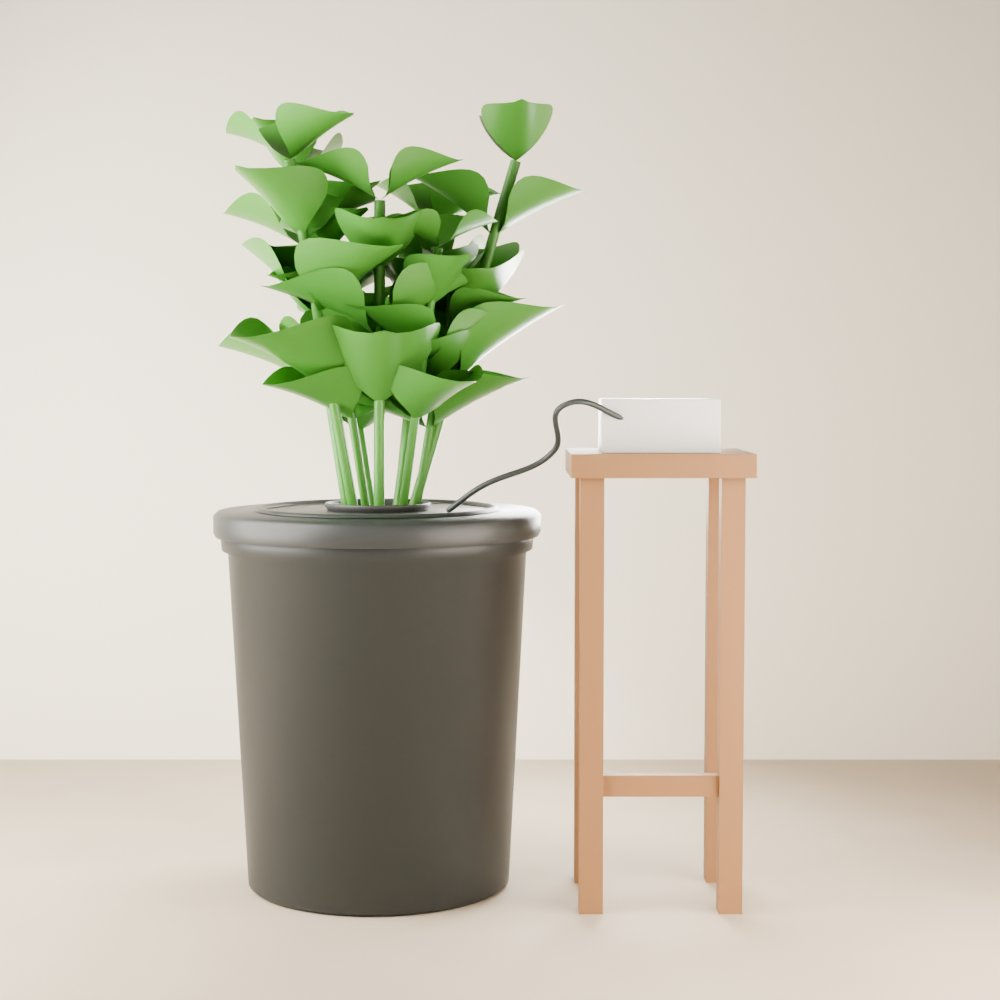

Next-step guide · Bubble buckets
Build a bubble bucket.
A bucket of plant-food water, a cheap aquarium air pump, and some bubbles. It's the next step up from a jar, and it grows big plants like tomatoes, peppers, and bushy basil surprisingly fast.

01 The idea
How it works
This is called deep water culture, or DWC. Like a water jar, the plant sits in a net cup in the lid with its roots hanging in nutrient water. The difference is the air pump: it pushes air through a stone at the bottom of the bucket, and the bubbles keep the water full of oxygen.
Because the roots always have food, water, and air, plants can grow much bigger and faster than in a jar. The trade-off is a little more setup and a weekly check-in.
New to growing? Try a jar or some microgreens first. This guide will make more sense once you've grown something.
02 Shopping list
What you need
Tick things off as you gather them. Most of it is sold at pet stores (aquarium aisle) and hydroponic shops.
-
A food-safe 19 litre (5 gallon) bucket is the classic choice. It needs to block light, so use a dark one, or wrap or paint a white one. Light in the water grows algae.
-
A bigger version of the jar's net cup, about 12.5 to 15 cm (5 to 6 inches) across, with a rim that sits in a hole in the lid.
-
A small single-outlet pump is enough for one bucket. The air stone sits at the bottom and makes the bubbles.
-
A tiny one-way valve that goes in the air tubing. It stops water from flowing back down the tube into the pump if the power goes off. Costs a dollar or two.
-
Your seedling grows in a rockwool or coco cube, and clay pebbles fill the net pot around it to hold it steady. Rinse the pebbles well first, because they're dusty.
-
The same "hydroponic nutrients" used for jars. For tomatoes and peppers, look for one made for fruiting plants (often a "grow" and a "bloom" formula).
-
Not optional for this one. In a big bucket, the pH can drift over a couple of weeks, and checking it is the easiest way to keep plants healthy. New to pH? Read our pH guide.
-
Big fruiting plants like tomatoes and peppers need much more light than a window gives indoors. Leafy plants like lettuce and basil can manage with a bright window in summer.
03 Safety first
Electricity and water
This is the first of our guides that puts something electric next to water, so take two minutes on these:
- Keep the pump out of the water and up high, on a shelf or the lid, not on the floor beside the bucket.
- Make a drip loop: let the power cord hang down in a U below the outlet before it goes up to the plug, so any drips fall off the bottom of the loop instead of running into the socket.
- Use a GFCI outlet (the kind with "test" and "reset" buttons, often found in kitchens and bathrooms, and called an RCD in some countries) or a plug-in GFCI adapter. It cuts the power if something goes wrong.
- Unplug the pump before you put your hands in the water.
04 Method
Step by step
-
Start a seedling
Sprout a seed in a growing cube first (our seed-starting guide shows how). Wait until it has a few real leaves and roots poking out of the bottom of the cube.
-
Prepare the lid
Cut a hole in the middle of the lid so the net pot sits in it snugly by its rim. A hole saw on a drill makes this easy. Cut a small hole near the edge for the air tubing.
-
Set up the air
Attach the air stone to the tubing and drop it to the bottom of the bucket. Run the tubing out through the small hole, add the check valve (the arrow points toward the bucket), and connect it to the pump. Put the pump somewhere higher than the water.
-
Mix the plant food
Fill the bucket with water and add hydroponic nutrients using the label's amounts. For a young seedling, start at about half strength (our plant food guide explains how). Stir, then check the pH and adjust it to between 5.5 and 6.5.
-
Plant it
Set the cube in the net pot and fill around it with clay pebbles. Adjust the water so it touches the bottom 1 to 2 cm (½ to ¾ inch) of the net pot. Put the lid on and plug in the pump. It runs all day and night.
-
Lower the water as roots grow
Once roots are hanging well down into the water, usually after a week or two, let the level drop so there's a gap of about 2.5 to 5 cm (1 to 2 inches) of air under the net pot. The upper roots breathe in that gap.
-
Check in once a week
Top up with plain water as the plant drinks, and check the pH. Every 2 weeks or so, empty the bucket and refill it with fresh nutrient water. Healthy roots are white or cream coloured.
-
Support and harvest
Leafy plants: pick outer leaves as you need them. Tomatoes and peppers: tie the stem to a stake or a string as it grows, and gently tap the flowers once a day to help them make fruit, since there are no bees indoors.
Times and amounts are rough. Follow your nutrient label and watch your plant.
05 Troubleshooting
If something looks wrong
- Brown, slimy, smelly roots
- This is root rot, the most common DWC problem. It's usually from warm water, which holds less oxygen. Check the pump is bubbling, keep the water cool, ideally around 18 to 22°C (65 to 72°F), and change to fresh nutrient water.
- Green slime in the bucket
- Algae from light getting in. Cover the bucket better, including any gaps around the net pot.
- Water flowing back toward the pump
- Add a check valve, or move the pump higher than the water level.
- Yellow or spotty leaves
- Check the pH first, because nutrients can't be taken up properly when it's off. If the pH is fine, the plant may need fresh nutrient water.
- Tall, stretchy plants
- Not enough light. Move the grow light closer or give it more hours.
Show us your bucket
Join the Root Collective to swap tips, ask questions, and show off your harvest.
Join us, it's free